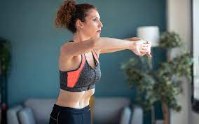

Hipopressivo e seus benefícios

O que é hipopressivo?
A ginástica hipopressiva é um método que foi criado na década de 70 e que tem ganhado espaço nas academias de ginástica e nas clínicas de reabilitação, porque além de fortalecer os músculos abdominais e das costas tem se mostrado útil como forma de prevenção e tratamento de diversas alterações como hérnias, alterações na região genital, equilíbrio e postura. Para fazer ginástica hipopressiva deve-se realizar uma expiração máxima e depois 'sugar' o abdômen todo para dentro, ficando sem respirar e mantendo essa contração máxima. Esse movimento melhora o funcionamento intestinal, afina a cintura e melhora a postura combatendo a dor nas costas e os desequilíbrios posturais.
Quais são os benefícios?
- Afinar a cintura;
- Tonificar os músculos das costas;
- Combater a perda de urina e fezes;
- Prevenir hérnias;
- Combater os desvios da coluna;
- Melhorar o desempenho sexual;
- Melhorar a postura e o equilíbrio;